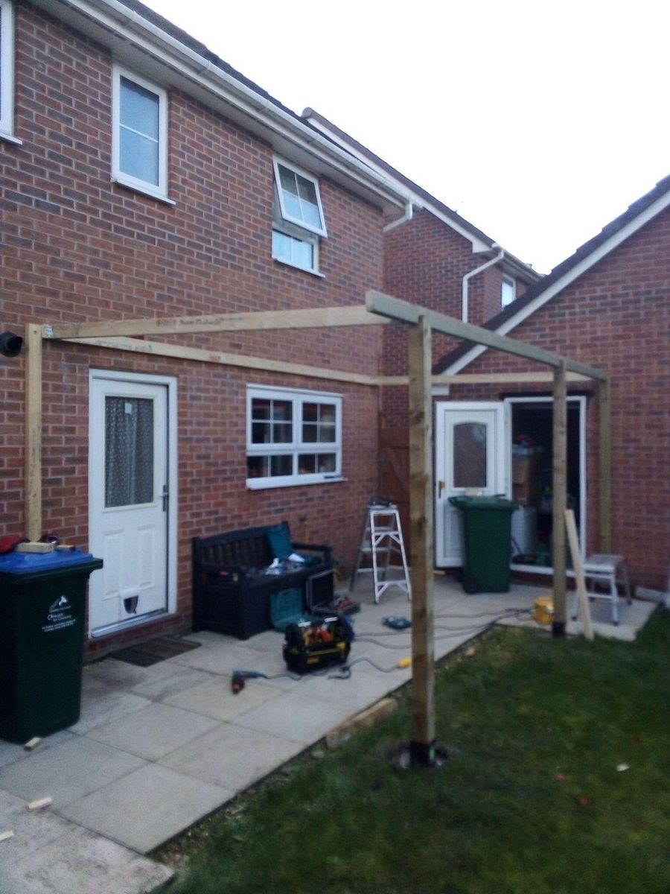
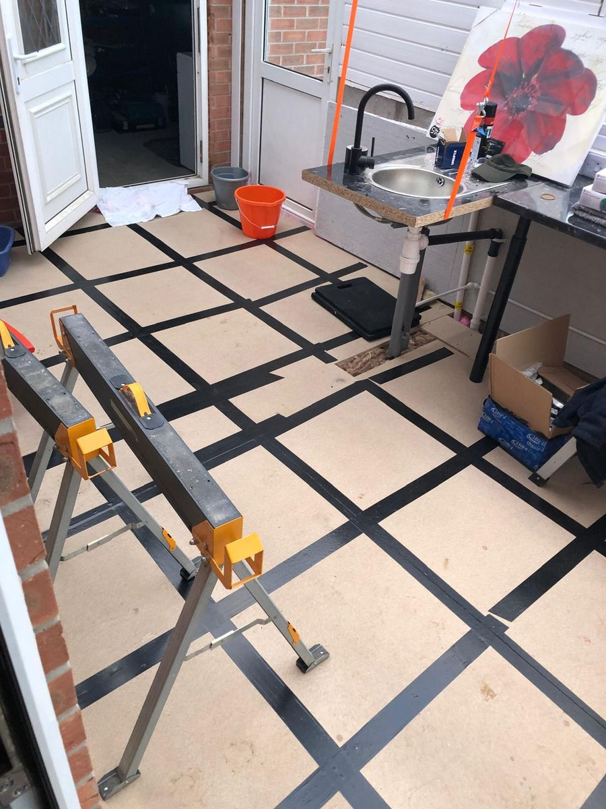
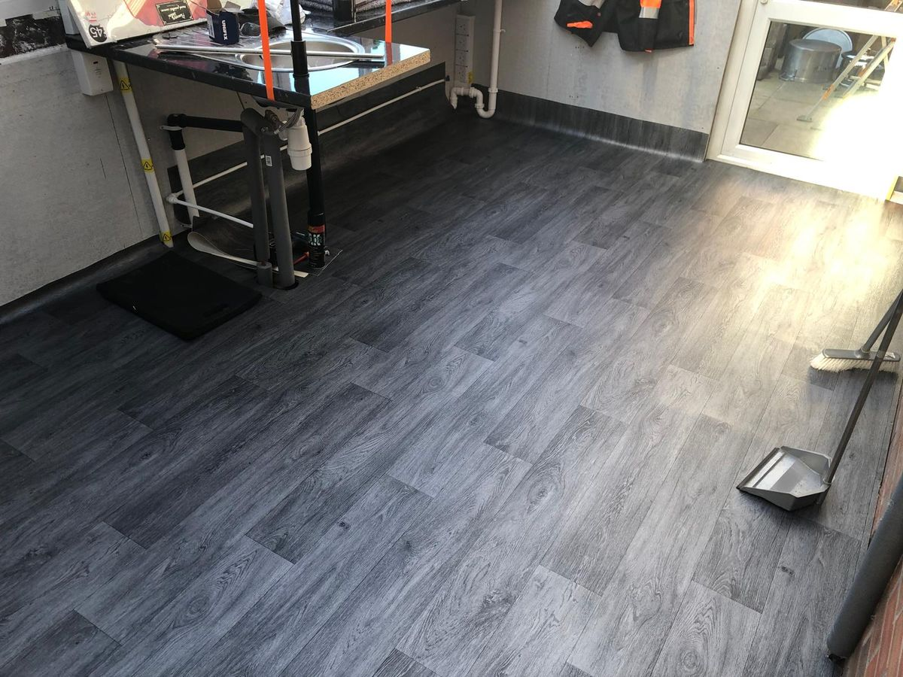
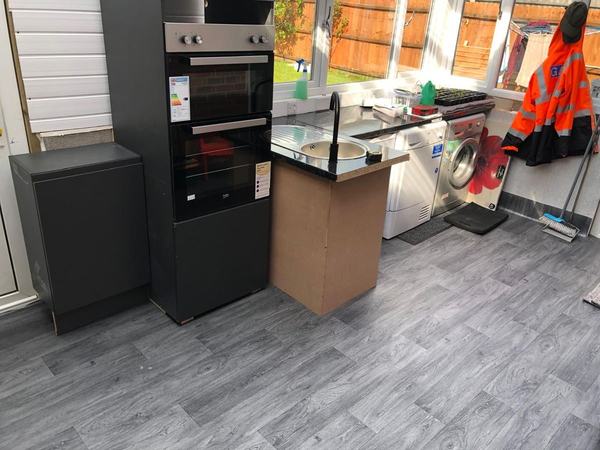

Conservatory Conversion
A conservatory turned into a working utility and kitchen space. New timber structure built off the house wall, the floor boarded and levelled, water and waste run in, then flooring laid and the units and appliances fitted. One job covering carpentry, plumbing and fitting out.
Ask about work like this